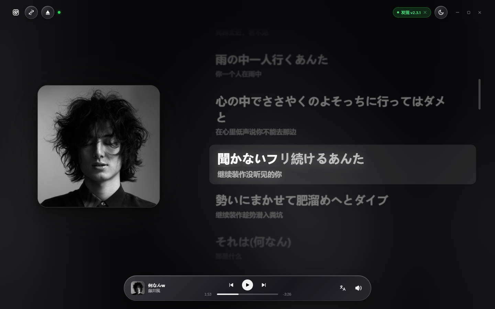
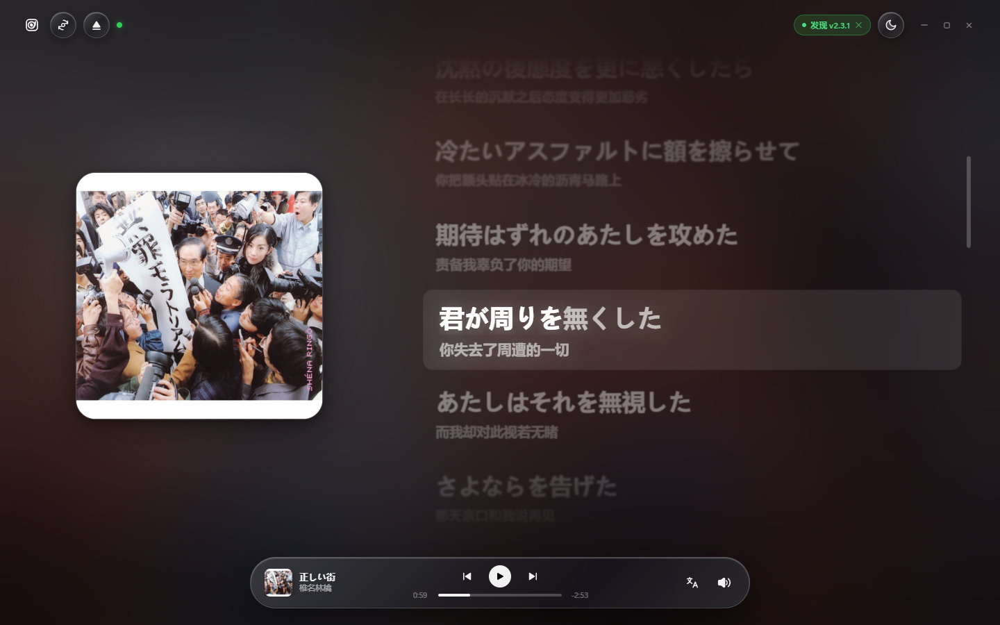
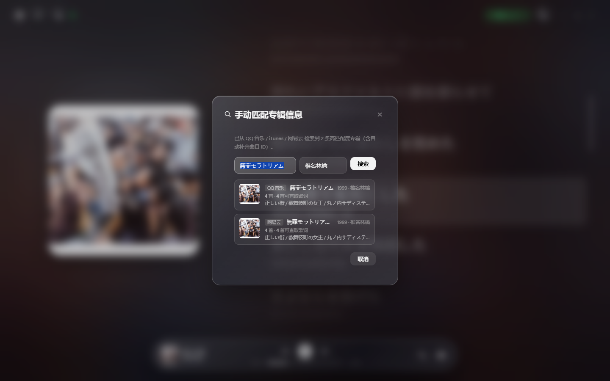
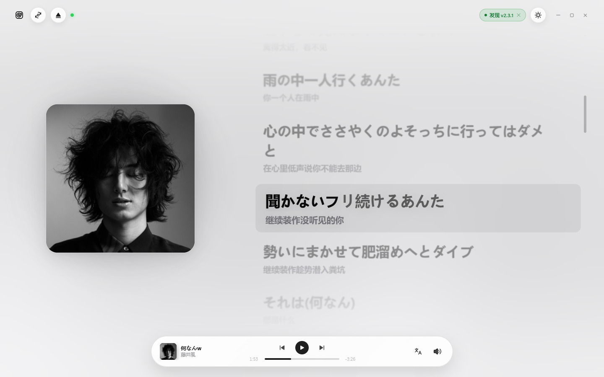
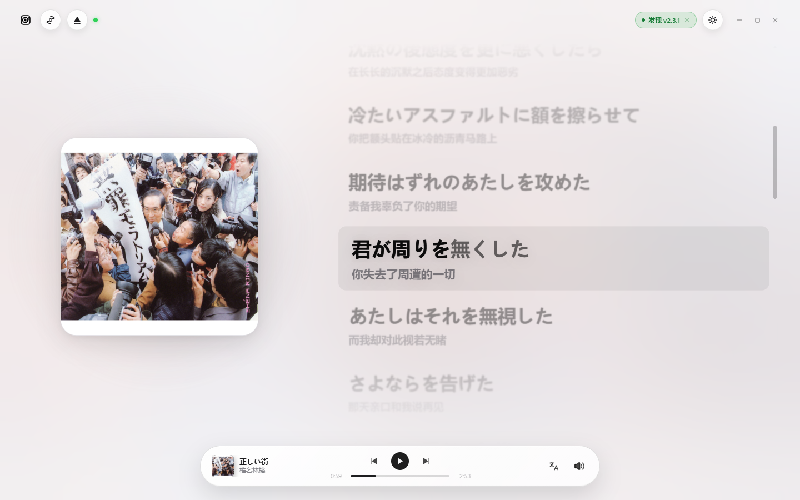
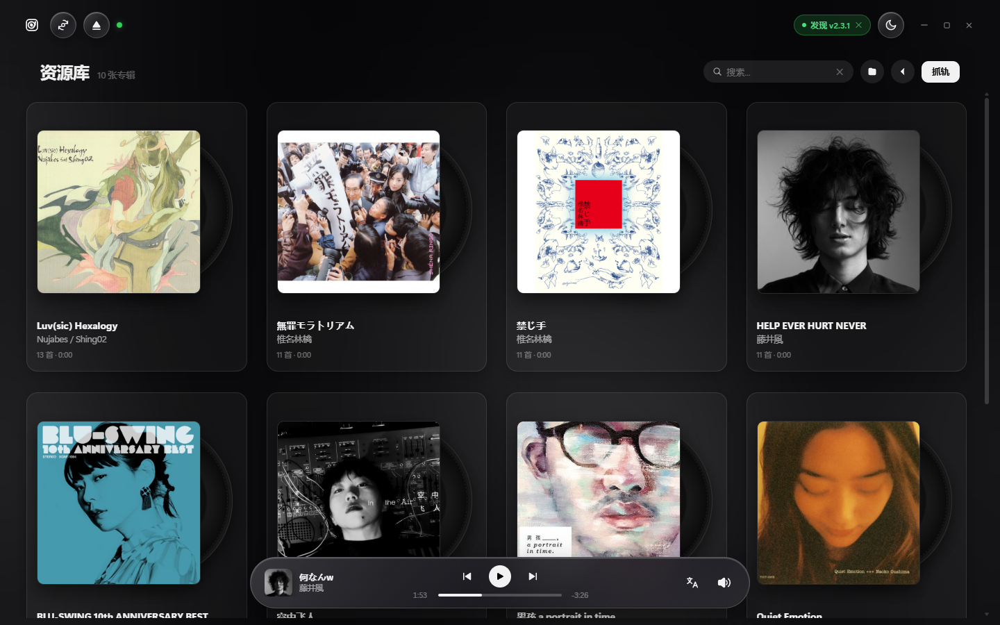
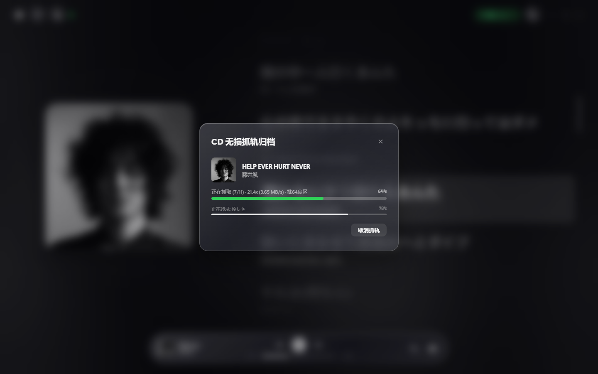
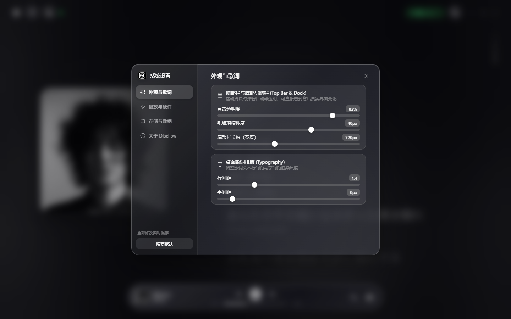
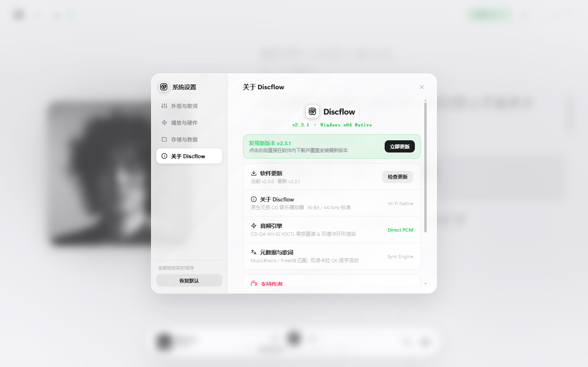

Discflow v2.3.2 · Windows 10/11 单文件便携 · 应用内直下更新
把实体唱片放回桌面中央
放入光盘即可无损直读原盘音轨并无缝跨轨播放，也能以 64 扇区零拷贝归档为本地 WAV。无边框原生圆角窗体，只留下唱片本来的声音与顺序。

16 Bit
CD-DA 原生采样位深
Gapless
双缓冲内存预读无缝跨轨播放
64 扇区
零拷贝极速抓轨与划痕单扇区容错
14.6 MB
单文件便携，支持软件内自动更新
直读原盘，也能无损留存整张专辑
一张专辑从序曲到终章的起承转合，不该被拆成零散的单曲推荐。无论通过光驱直读即时开播，还是按音轨顺序归档成无损 WAV 随身收藏，Discflow 始终完整保留每一首曲目的位置与动态。
双语逐字歌词
外语原文与中文译词同步逐字滚动
整合网易云 yrc、QQ 音乐与 LRCLIB 多源词库，支持日文假名音拍 (Mora) 聚合分词与片头「作词 / 作曲」降噪展示，配合快捷键 [ / ] 毫秒级校准时间轴。

音拍级逐字高亮与片头信息降噪
网易云 yrc / QQ / LRCLIB

三源专辑匹配 · 自动补齐曲目 ID
一键整碟升级歌词
黑白双主题
暗夜沉静，浅色温润，自由切换
跟随系统深浅模式自动响应，也可一键手动切换。深色界面突出唱片封面与歌词光影，浅色界面如纸本封套般清朗耐看。
藤井風《HELP EVER HURT NEVER》
Dark Mode
椎名林檎《無罪モラトリアム》双语歌词
Dark Mode

藤井風《HELP EVER HURT NEVER》
Light Mode

椎名林檎《無罪モラトリアム》双语歌词
Light Mode
本地无损资料库
零拷贝极速抓轨，归档为纯正 WAV
64 扇区大批量直读配合 1MB 流式缓冲写入，抓轨期间自动隔离巡检与播放竞争并实时展示倍速与速率。四列黑胶陈列架支持即时搜索、ZIP 备份与离线无损回放。

本地无损唱片陈列架
四列货架 · 即时检索

无损 WAV 极速抓轨归档
实时倍速 · 划痕单扇区容错
系统偏好设置
macOS 分栏设置与应用内直下更新
700×540 左侧分栏导航划分「外观与歌词 / 播放与硬件 / 存储与数据 / 关于 Discflow」，支持滑块透视预览底栏透明度；检测到新版本后直接在软件内下载覆盖并自动重启。

分栏设置 · 外观与玻璃参数
滑块实时透视预览

关于与更新 · 软件内直下安装
PE 校验 · 静默重启